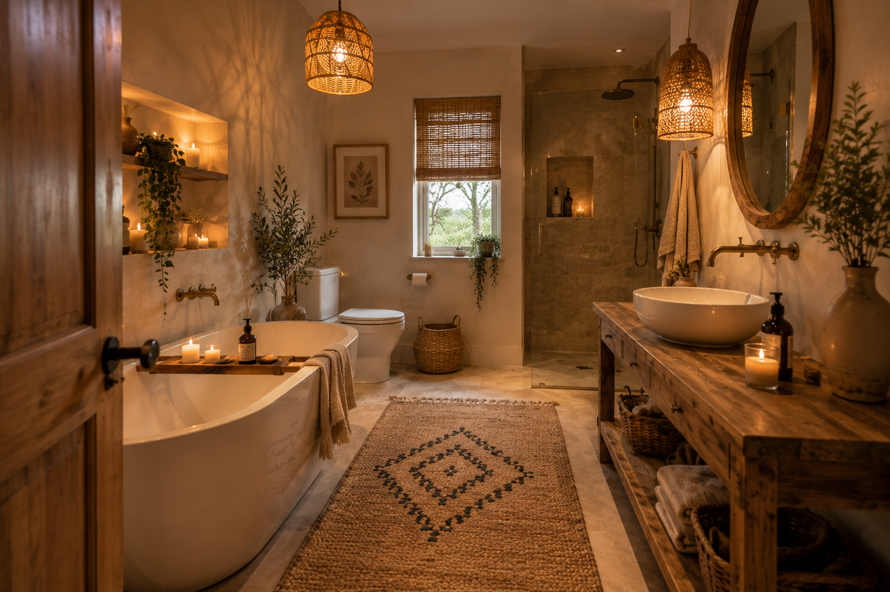
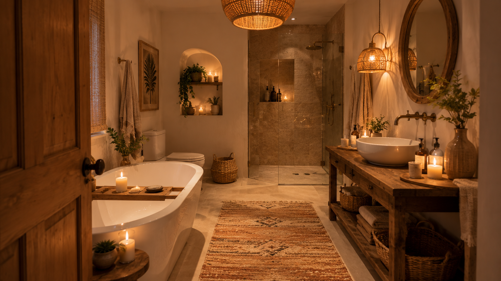
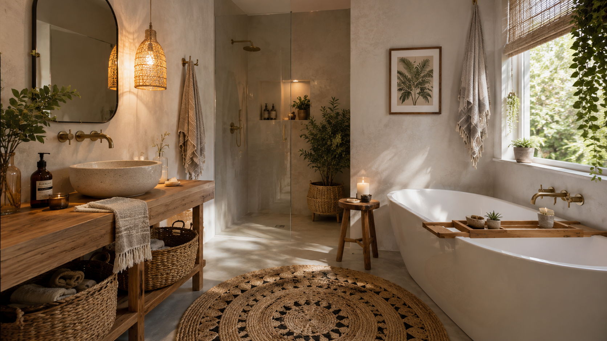

Woven Rattan Mirror
A boho bathroom looks amazing with a large rattan-framed mirror.

Terracotta & Clay Accents
Terracotta colors are perfect for boho style.

Macramé Wall Hanging
Macramé is a classic boho decoration.
